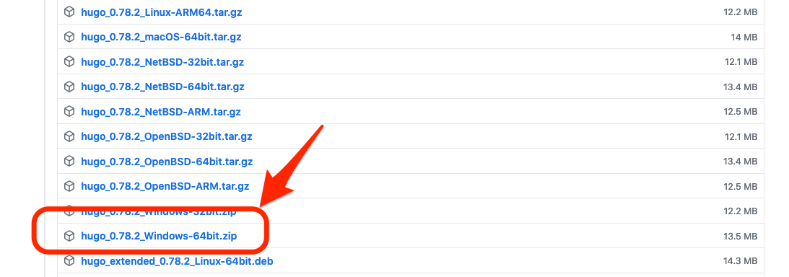
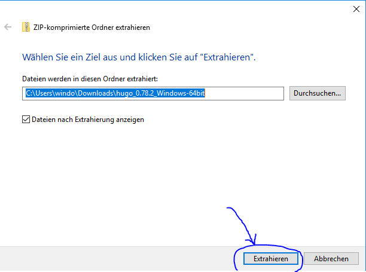
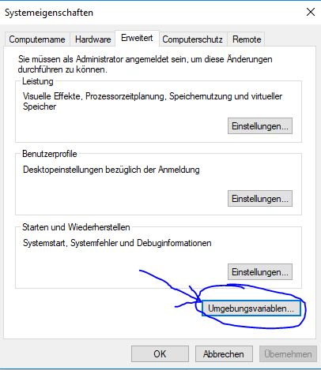
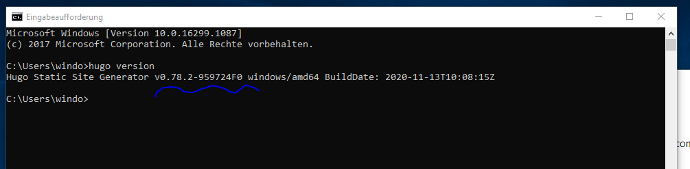

Einleitung
Hugo ist ein Tool, womit statische HTML Seiten generiert werden können. Es wurde ausgewählt, da die Installation verhältnismäßig einfach ist und es ein sehr aktives Open Source Projekt ist. Somit kann in dem Git Workshop gemeinsam an einer Webseite gearbeitet werden, ohne dass Vorkenntnisse von bestimmten Programmiersprachen vorausgesetzt sind.
Voraussetzungen
Bevor Sie mit dem Tutorial starten, sollte ein Texteditor wie VS Code, Atom oder Notepad++ auf Ihrem Rechner installiert sein.
Referenzen
Die Beschreibungen in diesem Tutorial sind angelehnt an der folgenden Webseite:
Herunterladen von Release Packet
Die Releases von Hugo sind auf dieser Webseite zu finden:
https://github.com/gohugoio/hugo/releases
Scrollen Sie in dem neusten Release bis zu dem Link für die ZIP-Datei für Windows. Nach einem einfachen Klick auf diesen Link startet der Download automatisch.

Entpacken von ZIP Datei
Gehen Sie nun zu Ihrem Download-Ordner und klicken Sie mit der rechten Maustaste auf die heruntergeladene ZIP-Datei. Wählen Sie aus dem Kontextmenü “Alle extrahieren” aus. Nun öffnet sich ein Dialog welcher abfragt wohin die Dateien extrahiert werden sollen. Wählen Sie hier einen beliebigen Ordner aus, z.B. direkt in das Downloadverzeichnis:

Konfiguration von Umgebungsvariablen
Gehen Sie nun zu der Sucheingabe der Windows Hauptnavigation und geben Sie dort das Wort “Umgebungsvariablen” ein. Nach dem Öffnen des daraufhin gefundenen Programm öffnet sich der folgende Dialog, in welchem Sie als nächstes den Button “Umgebungsvariablen” drücken:

Hier wollen wir die Variable “Path” bearbeiten:

Hier muss nun der Ordner eingetragen werden, in den Hugo extrahiert wurde.
Testen der Installation
Als nächstes gehen wir zurück zu der Sucheingabe des Windows Hauptmenü, geben dort “Eingabeaufforderung” ein und öffnen das Programm was daraufhin gefunden wird.
Wenn daraufhin das Kommando “hugo version” eingegeben und bestätigt wird, sollte Hugo berichten mit welcher Version es installiert wurde.
